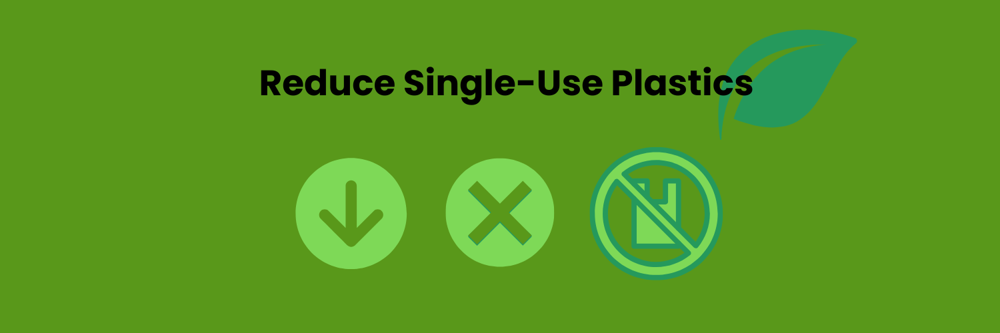
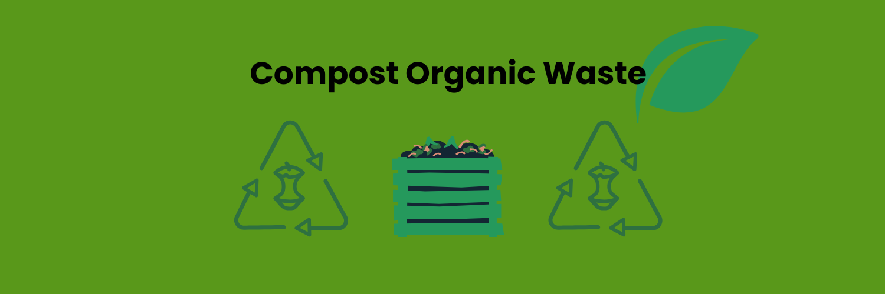
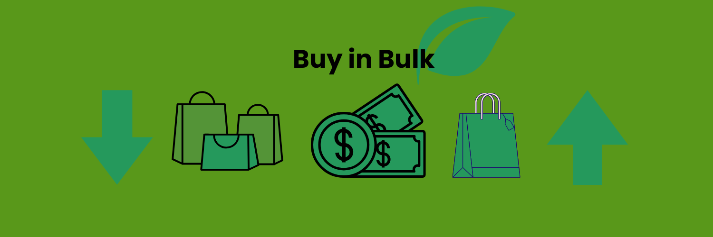
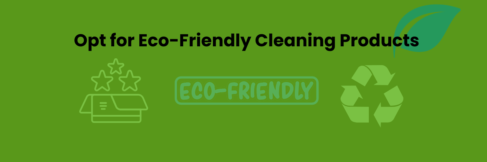
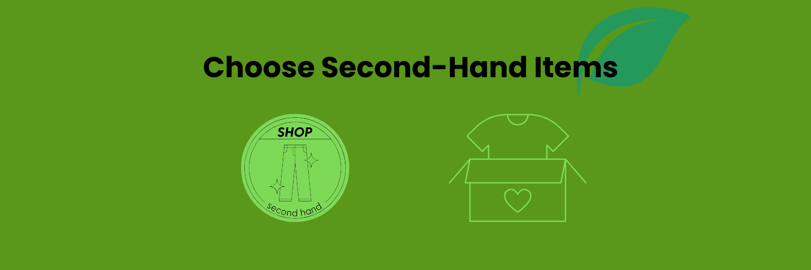

Join the zero-waste movement and make a positive change in your daily life
Start by avoiding disposable plastic products such as straws, cutlery, and plastic bags. Replace them with reusable items made from stainless steel, bamboo, or glass.
Composting food scraps and organic waste can significantly reduce your landfill contribution. It’s a great way to create nutrient-rich soil for your garden.
Purchasing items in bulk not only reduces packaging waste but also helps you save money. Bring your own containers to fill up with grains, nuts, and other pantry staples.
Switch to natural cleaning products such as vinegar, baking soda, or eco-friendly commercial cleaners that come in reusable containers to minimize chemical waste.
Buying second-hand clothes, furniture, and electronics helps reduce the demand for new products, which in turn reduces waste and environmental impact.
